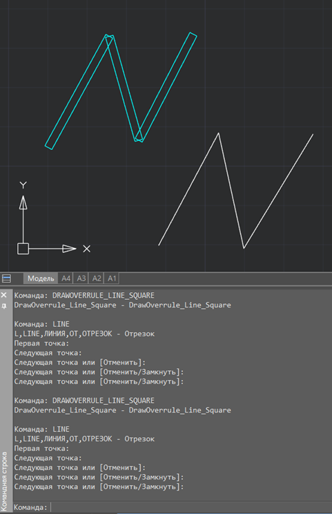

Свернуть все
Свернуть все Развернуть все
Развернуть все|
Справочное руководство .NET API
|
    
Закрыть
|
|
Teigha.GraphicsInterface.DrawableOverrule
Свернуть всеРазвернуть все|
Справочное руководство .NET API
|
Закрыть
|
|
Класс предназначен для создания переопределения графического представления стандартных примитивов nanoCAD.
Иерархия классовОписаниеКласс предназначен для создания переопределения графического представления стандартных примитивов nanoCAD. С помощью класса можно фактически рисовать окружность на чертеже, но она будет отображаться так, как задано в переопределении, например, линией.
Класс является абстрактным. Чтобы его использовать, необходимо унаследовать его другим классом. Далее, внутри этого класса можно переопределить методы
ПримерВ качестве примера приведена команда DrawOverrule_Line_Square, которая переопределяет геометрию линии, превращая её в прямоугольник:
На рисунке ниже приведен результат работы переопределения: сверху - линия, отрисованная после первого вызова команды, которая активировала переопределение графического представления линии, снизу – результат повторного выполнения команды, при котором переопределение линии было отключено.

ТопикиСсылки